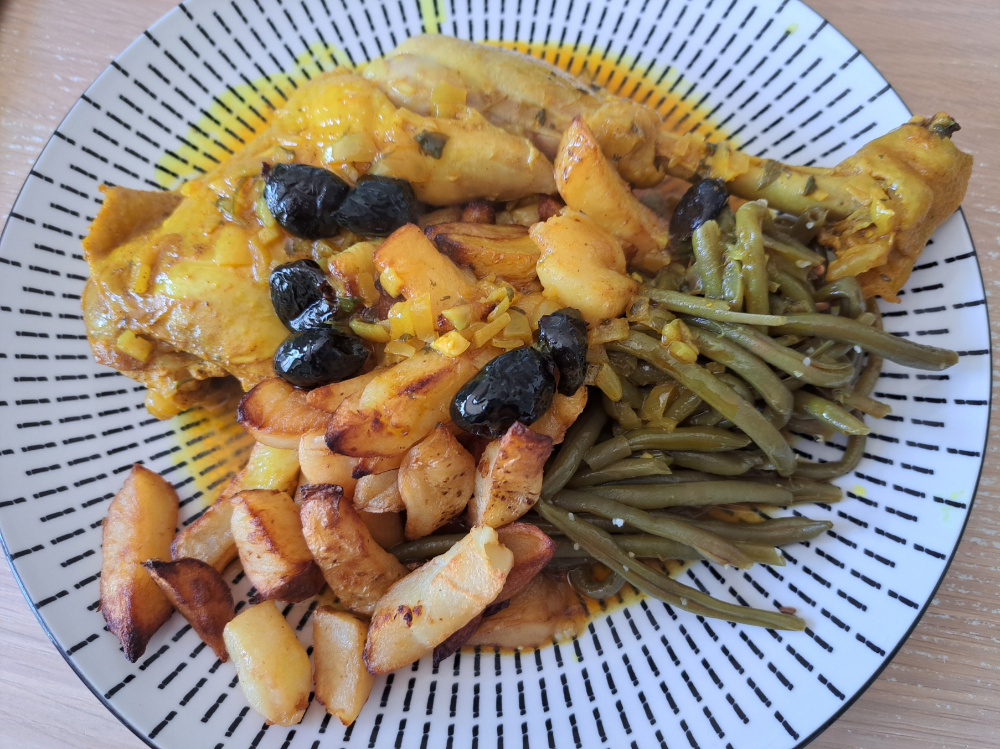

Moroccan Chicken with Olives

Instructions
Prepare the Marinade
In a bowl, combine all the Moroccan spices with the garlic cloves and chopped onion pieces. Add the neutral oil, olive oil, chopped parsley, and coriander. Mix well to create a paste. Coat the chicken thoroughly with this spice mixture. For best results, let the chicken marinate for a few hours in the refrigerator, but you can also cook it immediately.
Cook the Chicken
Place the marinated chicken in a large pot or Dutch oven. Add one cup of water. Cover and cook on low heat for 1 hour, turning the chicken occasionally to ensure even cooking. The chicken should become tender and the flavors will develop beautifully.
Add Olives and Preserved Lemon
After one hour, remove the chicken from the pot. Cut the preserved lemon into small pieces and add them to the sauce along with the black olives. Stir to combine and let cook for about 20 minutes to allow the flavors to meld together. Turn off the heat.
Brown and Serve
Preheat your oven to 400°F (200°C). Spread butter over the chicken pieces to give them a beautiful golden color. Place the chicken in an oven-safe dish and brown in the oven for 10-15 minutes until the skin is crispy and golden. To serve, spoon the sauce with olives and preserved lemon onto plates first, then place the browned chicken on top. Serve hot with homemade fries or crusty bread.